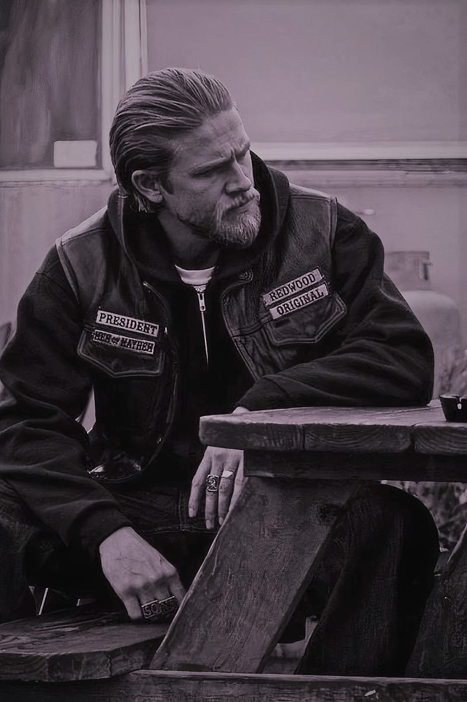

Información de la Serie
Creador: Kurt Sutter
Descripción: "Hijos de la Anarquía" es una serie de televisión que sigue a un club de motociclistas en California mientras navegan por las complejidades de la lealtad, la traición y el crimen. La serie explora temas de familia, moralidad y la lucha por el poder.
Personajes Principales:

Jackson "Jax" Teller (Charlie Hunnam)
Gemma Teller Morrow (Katey Sagal)
Opie Winston (Ryan Hurst)
Clay Morrow (Ron Perlman)
Alex "Tig" Trager (Kim Coates)
Piney Winston (William Lucking)